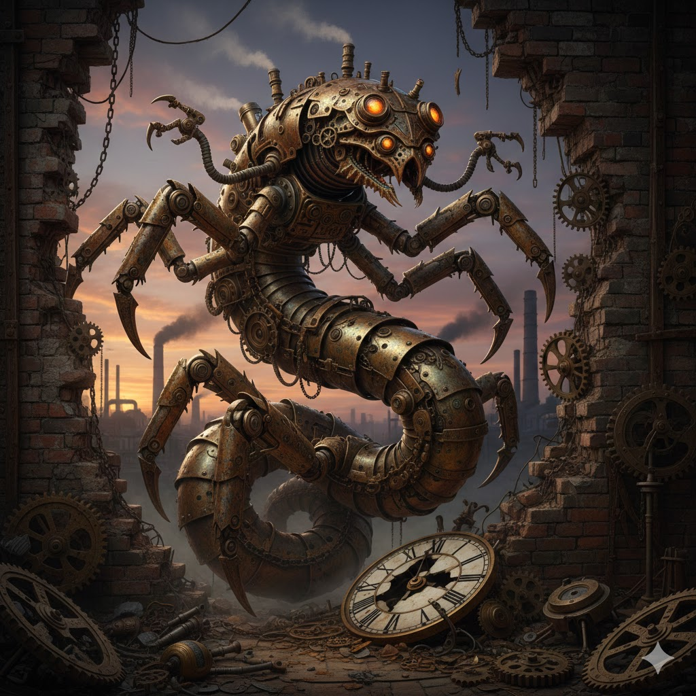

Fedora Linux Simple Static Web Server Startup

This blog post explains how you can configure a static file web server to start when Fedora Linux or a related distribution boots. That’s Rusty Python, BTW, a rusty steampunk mixture of a crab (associated with Rust, which I use to generate HTML files) and a python (which runs the web server).
Originally published to
There’s quite a bit of work left to do, including documentation, but google’s gemini AI and I are working on a Rust program (jpw3gen) that generates static HTML files from the markdown files in my writing project (jpw3).
The project includes a sh script to build the files and run or restart the web server, which is a python process. I want my system to run that web server automatically at startup, so I updated the script to just generate the files.
To manage the web server, gemini recommended the following approach that “allows your script to be managed like any other system service, providing features like automatic start on boot, logging, and automatic restart on failure.”
This is the command line that I need to invoke, running the web server on port 8080 with /home/jw/tmp/jpw3 as the document root:
python3 -m http.server 8000 --directory /home/jw/tmp/jpw3
First, create a file in the /etc/systemd/system/ directory. Creating this should require root privileges. Name the file something descriptive with the .service extension. The name jpw3.service seems good enough to me. Here's a template:
[Unit]
Description=<A short description of your program>
After=network.target
[Service]
# Use 'simple' for long-running processes that don't fork (like a typical Python script)
Type=simple
# Optional but highly recommended: specify the user to run the script as
# Replace <your_username> with a non-root user (or a dedicated service user)
User=<your_username>
# Optional: sets the directory the script runs in (useful for relative paths)
# WorkingDirectory=/path/to/script/folder
# The command to execute: use the absolute path to python and your script
# If using a virtual environment (recommended), the path will be different:
# ExecStart=/path/to/venv/bin/python /path/to/your/script.py
ExecStart=/usr/bin/python3 /path/to/your/script.py
# Optional: Automatically restart the service if it exits unexpectedly
Restart=on-failure
# Optional: Wait 5 seconds before attempting a restart
RestartSec=5
# Optional: Helps to see output immediately in journalctl, not buffered
Environment="PYTHONUNBUFFERED=1"
[Install]
# This specifies when the service should be started during boot
WantedBy=multi-user.target
My requirements are pretty simple:
- I don't really care when it starts as long as it's running by the time I have logged in.
- I won't create or use a different user for the service.
- I want to specify the document root on the command line instead of setting it as a working directory for the process.
- I want to be able to kill the web server; I don't want it to restart automatically.
This is my actual implementation:
# /etc/systemd/system/jpw3.service
[Unit]
Description=jpw3 static file web server
After=network.target
[Service]
Type=simple
User=jw
ExecStart=/usr/bin/python3 -m http.server 8000 --directory /home/jw/tmp/jpw3
Environment="PYTHONUNBUFFERED=1"
[Install]
WantedBy=multi-user.target
After writing the file, use the systemctl command to work with the service. You can cause the daemon to refresh its configuration:
sudo systemctl daemon-reload
To enable the service:
sudo systemctl enable jpw3.service
To start the service:
sudo systemctl start jpw3.service
You can check the status and get information about the service:
sudo systemctl status jpw3.service
You can use the journalctl command to view the service's logs. This appears to function something like bringing that process into the foreground, so you see the output it would have written to the console, but CTRL+C kills journalctl rather than killing the service:
sudo journalctl -u jpw3.service -f
You may want to reboot and confirm the web comes up.
Access the web server:
Change a file and ensure that refreshing the browser renders the updated data.
This may not be the safest way, but effectively kills the web server:
kill $(lsof -t -i :8000) 2> /dev/null
A better way:
sudo systemctl stop jpw3.service
Or to restart it:
sudo systemctl restart jpw3.service
Comments
Any comments go here: